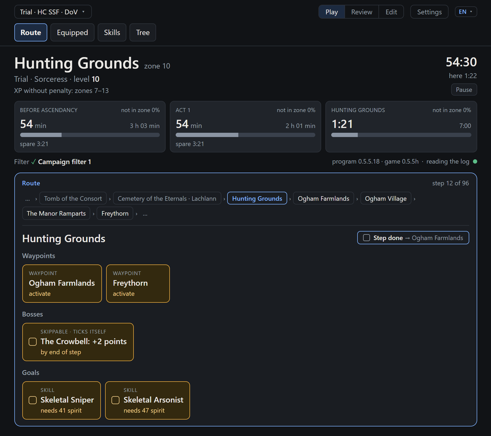
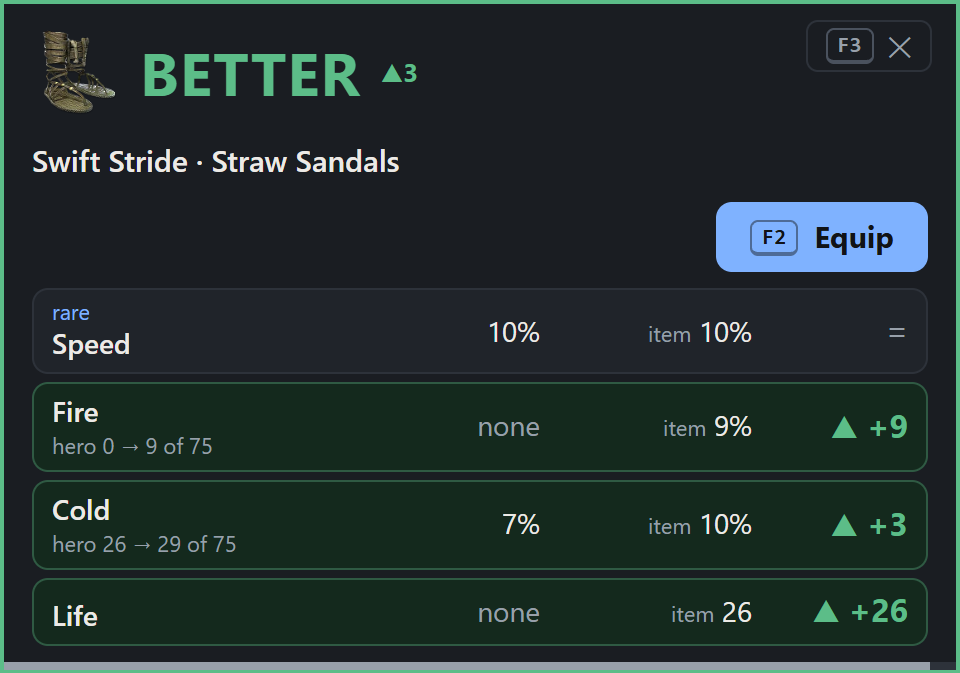
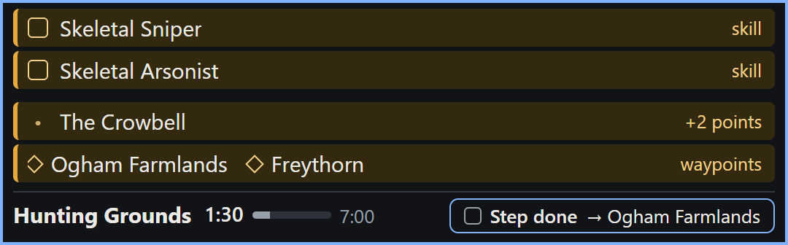

PoE2 Runbook
A Windows program for Path of Exile 2: it follows your plan — route, goals, build — by the game's log and shows the current step with what is left to do on it.
Looking for the current build…
The first public build is not published yet.
It will appear here: the program is downloaded only from this page.






Pictures: a trial copy of the program with a fictional hero.
What the program reads, listens to and presses
Each line below is taken from the program's code. The program is a separate window beside the game: it changes nothing of the game — not its files, not its memory.
Reads: the game's files
logs\Client.txtthe game's log, in the game's folder- Read only: the whole log at start, then the new lines twice a second. Taken from it: when the game starts and closes; the zone you enter; the hero's level — the hero's name and class come from these lines; quest rewards; deaths; the item filter the game loaded; your clicks in the passive tree; the game's version. Of everything said in chat, only the NPC lines your plan waits for are noticed; the rest is not stored.
Documents\the game's settingsMy Games\ Path of Exile 2\ poe2_production_Config.ini - Read only; read again when the file changes. Taken from it: which item filter is selected, the client's language, and the game's key bindings — so that the program's keys never take a key the game uses.
Documents\item filters the game downloaded from your accountMy Games\ Path of Exile 2\ OnlineFilters\ - Read only: each filter's name and rules. To call a filter by its name and to warn when the selected filter hides an item your plan looks for. A copy of each filter version the game loads is kept in the program's own folder.
- Steam's library files and the Windows registry
- Read only, to find where the game is installed.
libraryfolders.vdf,appmanifest_2694490.acf; in the registry — Steam's folder and the “Path of Exile 2” record of installed programs. If the game is not found, you point to its folder yourself.
Asks Windows
- The active window
- Which window is in front and which program owns it — to know that it is the game. The game's memory is not read.
- The game's window, the cursor, Alt
- Where the game's window stands, where the mouse cursor is and whether Alt is held — to place the program's windows over the game and to let you click them. Nothing is read from the screen.
Clipboard
- What is watched
- Only the clipboard's change counter — a number Windows keeps. The content is not read.
- When the content is read
- Once, when the counter changes while the game's window is active — that is your Ctrl+C or Ctrl+Alt+C over an item. In any other window the clipboard is not opened at all. What lay in it before the program started is not read.
- What is kept
- Text only, up to 200,000 bytes. A text that does not begin with the game's “Item Class” line is dropped at once: not stored, not written anywhere. An item's text is kept in memory only; when you press Equip, the item is saved in the hero's file as the worn one.
- Copy by F2
- The program remembers the whole clipboard (up to 32 MB), presses the game's copy keys, reads the item once and puts back what was there. What it remembered is not looked into.
Keys it listens to
- F2 Compare / Equip
- Compares the item under the cursor with what the hero wears; pressed again on the same item — records it as worn. Works with Alt held as well.
- F3 Close
- Closes the program's top window over the game.
- F7 Program ↔ game
- Brings the program's window forward, and back to the game.
- When they are listened to
- Only while the game's window is active (F7 — in the program's own window too). The moment another window is active the keys are released: in other programs they work as usual. If the game itself uses one of them, the program takes the next free one of F2, F3, F7, F6, F9, F10, F11. F4 is never taken.
- Other keys
- No keyboard hook is installed: the program does not see what else you press. The one exception is Alt — while its windows over the game are on, the program asks Windows whether Alt is held.
What it sends to the game
- Ctrl+Alt+C
- Once for each press of F2, and only while the game's window is active. It is the game's own “copy the item with its full description”. If the game binds the full description to a key other than Alt, that key is pressed in its place.
- Nothing else
- No chat messages or commands, no mouse clicks, nothing on a timer, nothing in answer to the log or the screen. Equip and your marks change the program's own records only.
Windows over the game
- Three small windows of the program stand above the game's window: the step list, the answer to a copied item and the passive tree hint. They never take the focus, and the mouse goes through them into the game — except while Alt is held with the cursor over a window, and on the buttons of the answer. They need the game in windowed or borderless full-screen mode. One switch in Settings turns them off.
What it writes to disk
%APPDATA%\PoE2 Runbook\ - Everything the program writes while it runs:
plans\your plans; the plan that comes with the program is copied here at the first startruns\a file per hero: events from the log, your marks, the items you recorded as wornfilters\copies of the filter versions the game loadedbackup\earlier versions of a plan, saved before each edit; removed plansexport\plan files you saved to shareupdate\the installer of a new version — after you press Update; removed once it is installedsettings.jsonthe game's folder, the window's size and place, your choices in Settingsprogram.logwhat the program did at this start; the five starts before it are kept toowebview\storage of the window's engine: the pages' own settings and cache
%LOCALAPPDATA%\Programs\ PoE2 Runbook\ - The program itself. Only the installer writes here; administrator rights are not asked.
- Your Downloads folder
- A plan file, when you press “Download plan file”.
- The game's folders
- Nothing is written into the game's folder or into
Documents\.My Games\ Path of Exile 2 - After removal
- Removing the program leaves
%APPDATA%\in place — your plans and heroes. Delete the folder yourself if you do not need them.PoE2 Runbook
Network
- The program sends nothing about you or your game anywhere: it has no account, no statistics, no error reports.
- Update check. At start, and then every 6 hours, the program downloads two small files from this site:
update/latest.jsonand its signatureupdate/latest.json.sig. If the site does not answer — or the game is already newer than the program and no new build is out yet — it asks again in 30 minutes. The request carries the program's version (User-Agent: PoE2Runbook/<version>) and nothing else: no cookies, no name, nothing about your game. The hosting sees your IP address, as with any web request. The check is switched off in Settings: “Check for updates”. - The program checks the file's signature itself — with a key built into it — before it reads the file, and accepts only a version newer than its own.
- Nothing is downloaded or installed until you press Update. Then the program downloads the installer from the address named in the signed file, compares its size and SHA-256 with that file, starts it and closes; the installer puts the new version in place and opens it.
- The pages of its window are served from your own computer (address 127.0.0.1) and answer this computer only.
- The window is drawn by Microsoft Edge WebView2, a component of Windows. It is Microsoft's, and it may contact Microsoft on its own, the way the Edge browser does.
- The program opens your browser only on your click: this site — from its About window; an item filter's page on pathofexile2.com; Microsoft's download page for WebView2 when that component is missing.
What it does not do
- Does not read the game's memory.
- Does not read the screen.
- Does not change the game's files or settings.
- Does not send chat messages or commands.
- Presses nothing by itself: each press it makes answers one press of yours.
- Does not ask for administrator rights.
The rules of Grinding Gear Games it follows
- GGG’s ruleA program that runs separately from the game is permitted; one that changes the game or its files is not.
- PoE2 RunbookPoE2 Runbook is a separate program: it reads the log and its own files and changes nothing of the game.
- GGG’s ruleA key that acts in the game is pressed by you, does one fixed thing and makes one action in the game.
- PoE2 RunbookF2 makes one copy per press. Nothing runs on a timer, by the log or by the screen.
- GGG’s ruleThe log, the clipboard and the screen may be read when you know what is done with them; the clipboard and the screen — once per key press of yours.
- PoE2 RunbookThis page is that list. The clipboard is read once per copy; the screen is not read.
The rules are retold here in our words. Source: the developer documentation of Path of Exile. GGG does not approve programs one by one; the rules are its own and may change.
This product isn't affiliated with or endorsed by Grinding Gear Games in any way.
First start
The installer is not signed yet, so Windows does not know its publisher. That is what the SHA-256 is for: it shows that your file is the one published on this page.
- Check the file before you run it.
In the folder with the downloaded file click the address bar of File Explorer, type
powershelland press Enter. In the window that opens run:
Compare the value under Hash with the SHA-256 next to the Download button — all 64 characters; upper or lower case does not matter. If they differ, do not run the file: download it again from this page.Get-FileHash "PoE2Runbook-Setup-*.exe" - Windows will warn about an unknown publisher. It shows “Windows protected your PC”. Press More info, then Run anyway. A browser may warn earlier that the file is rarely downloaded — choose to keep it. On Windows 11 with Smart App Control switched on the installer may be blocked outright: that protection has no “Run anyway”.
- The installer asks for no administrator rights.
It installs for the current user into
%LOCALAPPDATA%\. A new version is installed over the old one; your plans and heroes stay. Later the program tells you about a new version itself and installs it when you press Update.Programs\ PoE2 Runbook - The program finds the game by itself. Steam or the standalone client, on any drive. If the game is not found, the program says so and lets you choose its folder.
Plans
Plans approved by the program's author. A plan is installed from the program itself: Edit → Catalogue.
To propose a plan of your own, send the plan's file to .
What it needs
- Windows 10 or Windows 11, 64-bit.
- Microsoft Edge WebView2 — part of Windows 11; Windows 10 receives it through Windows Update. If it is missing, the program says so and offers Microsoft's download page.
- Path of Exile 2. Each build of the program is made for one version of the game — the one named next to the Download button.
- For the windows over the game: the game in windowed or borderless full-screen mode.
Languages of the program
- English
- Русский
- Deutsch
- Español
- Français
- 日本語
- 한국어
- Português (Brasil)
- ไทย
The program reads the log of a game client in any of these languages.
Author and licence
© 2026 Sergei Labutin
The source code is open under the GNU General Public License, version 3, with the author's additional terms.
You may use the program for any purpose, study it, change it and share your own version. If you share a version of your own, you must:
- publish its source under the same licence;
- keep “Based on PoE2 Runbook by Sergei Labutin — https://poe2.labutin.gg” in its “About” window and in its description;
- say that it is a modified version, and when it was modified;
- give it another name and another icon.
This summary explains the terms; it does not replace them. The terms in full — the files LICENSE and NOTICE.md — are in the program itself (Settings → About) and in the source code.
Source code: the program's repository.
Path of Exile 2 game data and images that come with the program belong to Grinding Gear Games. The licence does not cover them.
Official addresses
poe2.labutin.gg
This is the only official address of the program. poe2runbook.com leads here.
Official builds are published only at poe2.labutin.gg; the files themselves are stored in the releases of the program's repository.
A build from any other address is not ours: before you run a file, compare its SHA-256 with the one next to the Download button.